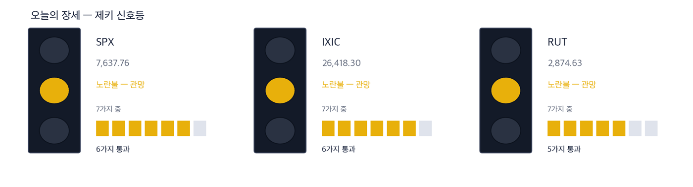
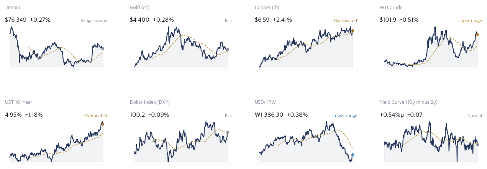
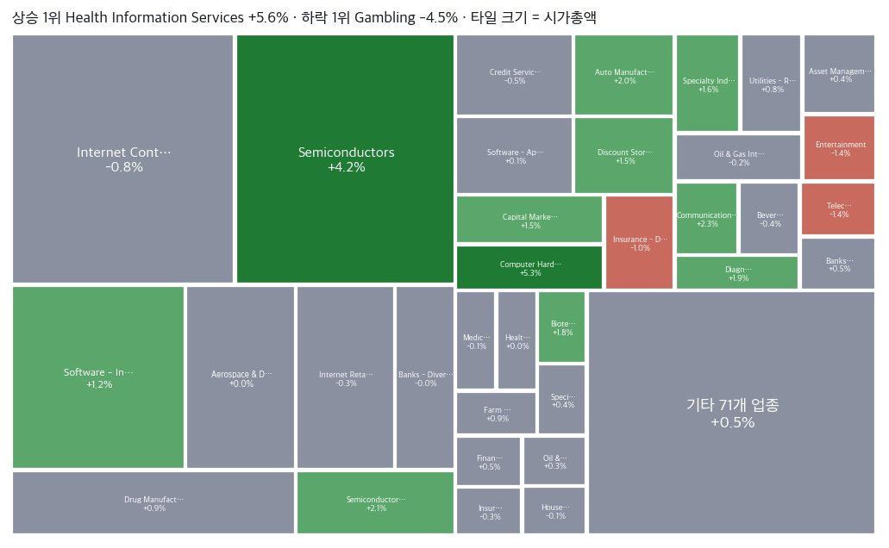
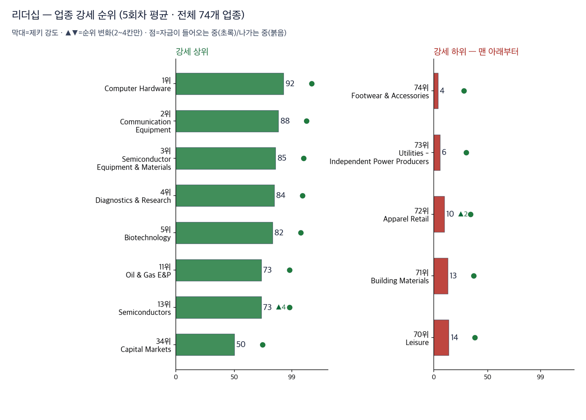
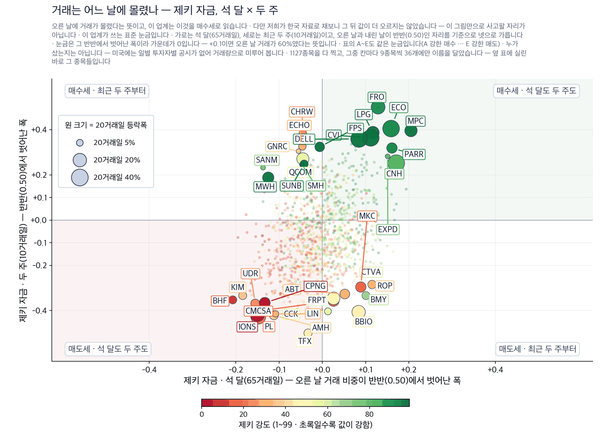
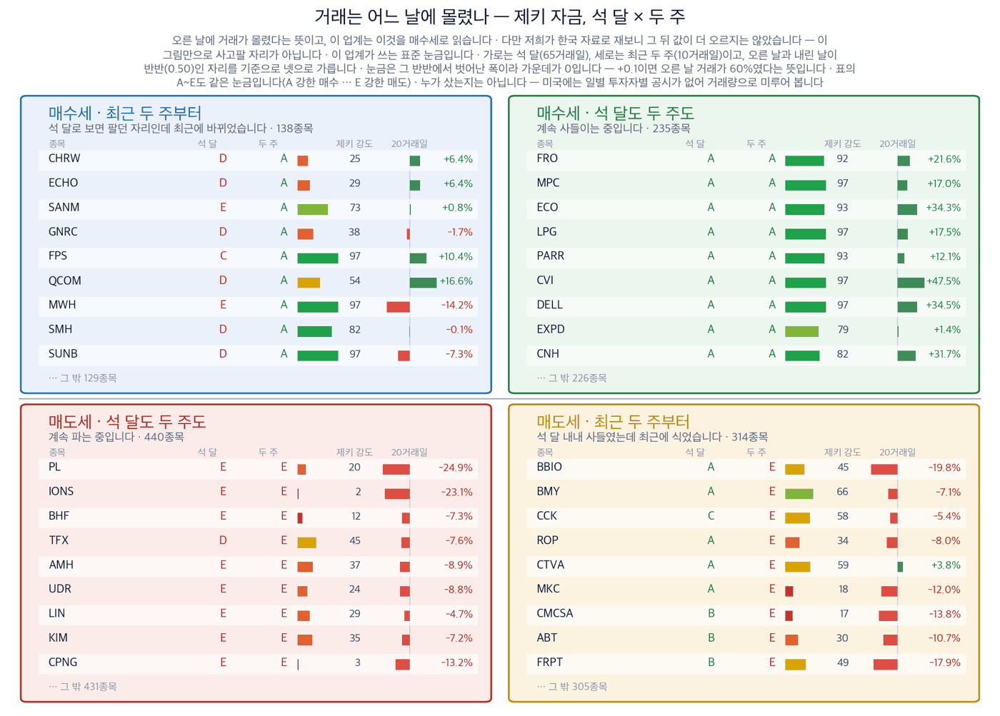
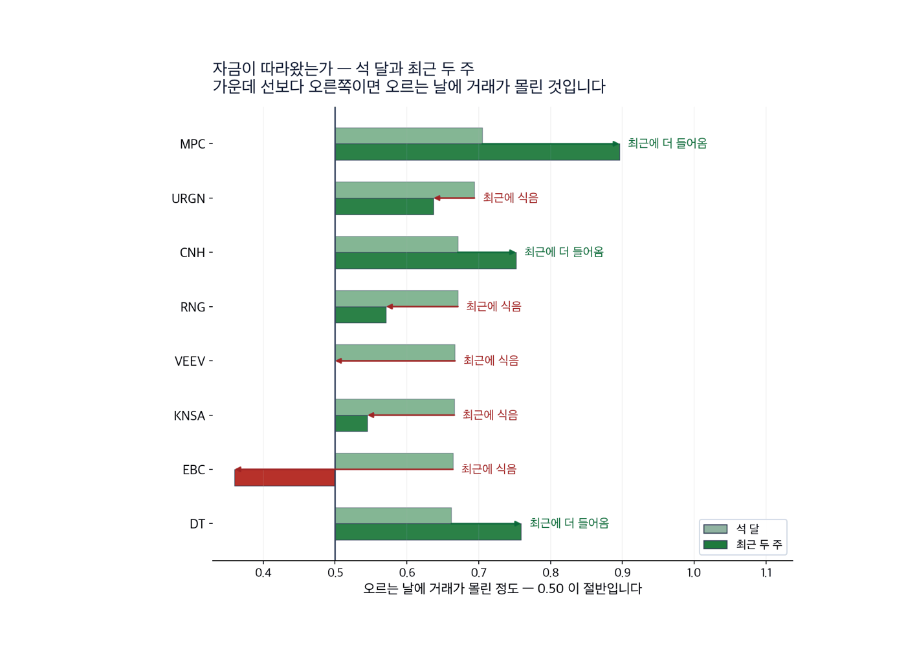

|
ZekiRex™ Apex US — 2026년 9월 18일
오늘의 판단 · 1/2
데이터 기준 9/17 (ET) 종가 · 밤사이 서울 9/18 종가(현지시간) |
ZekiRex™ |
|
|
| 저희가 정한 규칙이 고른 종목과 그 성적을 매일 그대로 싣습니다. 맞았든 틀렸든 지우지 않습니다. |
|
THE REX CALL
9월 17일 유가가 사흘 연속 내려 배럴당 100달러를 밑돌았습니다. 같은 날 뉴욕 증시는 6주 만에 가장 큰 하루를 보냈습니다.
9월 17일 종가로 매매는 없었고 손절가를 밑돈 종목도 없습니다. 자리 4개가 모두 차 있고, 새로 들어온 자금은 초단기 국채 펀드(USFR)에 담겨 현금이 69.56%입니다.
오늘 반드시 알아야 할 것
1. 9월 17일 유가가 사흘 연속 내려 서부텍사스산원유가 배럴당 100달러를 밑돌았습니다. 값을 내린 것은 수요가 아니라 우회한 수송로입니다. 사우디아라비아는 동서 송유관이 멈춘 뒤 호르무즈 해협 밖 물량을 앞당겨 팔고 있습니다. 배관이 복구되기 전까지 이 안도는 되돌릴 수 있는 종류입니다. (월스트리트저널·CNBC·블룸버그) 2. 같은 날 미 국채 10년물이 5.01%에서 4.95%로 내렸습니다. 2년물은 4.40%로 거의 그대로여서 장단기 금리차가 0.55%포인트로 좁아졌습니다. 원유가 싸지면 물가 쪽 압력이 먼저 풀리고, 그 압력은 곡선의 긴 쪽에 들어 있습니다. 3. 9월 17일 S&P 500은 7,638로 1.14%, 나스닥 종합은 26,418로 1.69% 올랐습니다. 6주 만에 가장 큰 하루였고 두 지수 모두 50일 이동평균선을 되찾았습니다. 인텔과 AMD가 이끈 반도체 반등이 앞장섰습니다. (월스트리트저널·인베스터스비즈니스데일리) 4. 젠슨 황 엔비디아 최고경영자가 9월 17일 내년에 팔 칩이 올해의 두 배에 이를 것이라고 말했습니다. 같은 날 찰스 3세 국왕이 인공지능 정상회의를 열어 통제 수단이 늦기 전에 필요하다고 경고했습니다. 공급자의 전망과 주최자의 경고가 같은 날 나왔고, 값을 움직인 것은 앞의 하나입니다. (CNBC·포천) 5. 일본은행이 9월 18일(현지시간) 기준금리를 연 1.0%에서 1.25%로 올렸습니다. 31년 만에 가장 높은 수준입니다. 그런데 달러는 156.14엔에서 156.90엔으로 올랐습니다. 우에다 가즈오 총재의 회견이 기대보다 물러선 탓입니다. 엔으로 빌려 다른 시장에 넣어 둔 돈이 아직 돌아오지 않았다는 뜻입니다. (가디언·블룸버그)
| |
 이 그림 읽는 법 | 켜진 등 | 오늘의 국면입니다. 초록은 매수 우위, 노랑은 관망, 빨강은 매수 자제입니다. | | 채워진 칸 | 7가지 조건 중 몇 개를 통과했는지입니다. 칸이 많이 찰수록 시장 구조가 튼튼합니다. | | 칸이 다 찼는데 노랑·빨강이면 | 다른 이유로 한 단계 낮춘 것입니다. 그림 아래에 그 이유를 적었습니다. |
|
최근 10거래일 국면 추이 (왼쪽이 과거) 방향 — 어디까지 왔나. 제키 신호등은 7가지 조건을 세어 정합니다. S&P 500과 나스닥 종합이 6가지, 러셀 2000이 5가지입니다. 되찾은 것은 50일 이동평균선 위에 있어야 한다는 조건이고, 러셀 2000은 아직 그 선 아래입니다. 셋이 함께 못 채운 하나는 52주 저점에서 충분히 올라와 있어야 한다는 조건입니다. 장기 구조는 셋 다 온전합니다. 그래서 노란불이고, 노란불은 매수를 막지 않습니다.
| |
| 오늘의 조치 |
| 오늘 신규 매매 없음. 규칙이 요구하지 않는 날에 거래하지 않는 것도 하나의 결정입니다. |
|
| 오늘 반드시 알아야 할 것 |
|
값을 내린 것은 수요가 아니라 우회한 수송로입니다
9월 17일 서부텍사스산원유가 사흘 연속 내려 배럴당 100달러를 밑돌았습니다. 같은 날 미 국채 10년물이 내렸고 2년물은 4.40%로 거의 그대로였습니다. S&P 500은 7,638로 1.14%, 나스닥 종합은 26,418로 1.69% 올랐습니다. 두 지수 모두 50일 이동평균선을 되찾았습니다. 러셀 2000은 0.55% 올랐지만 그 선 아래에 남았습니다. 순서가 중요합니다. 유가가 내리자 금리가 내렸고, 금리가 내리자 설비를 파는 쪽이 먼저 올랐습니다. (로이터·CNBC) 왜 그런가. 한국과 미국 지면이 같은 하루를 다르게 셉니다. 경향신문과 매일경제는 유가와 미국 금리가 함께 내린 것을 반등의 이유로 들었습니다. 월스트리트저널은 일본은행 인상이 도쿄 투자자에게 미국 자산의 매력을 떨어뜨린다는 쪽을 앞세웠습니다. 차이는 주식이 아니라 통화에서 드러났습니다. 우에다 가즈오 총재의 회견이 기대보다 물러서자 달러가 156.14엔에서 156.90엔으로 올랐습니다. 서울에서는 9월 18일(현지시간) 코스피가 2.66% 오른 6,894.23으로 마쳤습니다. (매일경제·블룸버그·연합뉴스) 다음에 무엇이. 다음 판에서 함께 볼 것은 둘입니다. 동서 송유관의 복구 일정과 일본은행의 다음 발언입니다. 배관이 돌아오면 앞당겨 판 물량이 사라지고, 일본의 다음 인상이 확실해지면 아시아로 나간 자금이 먼저 움직입니다.
그래서 우리는: 정유를 들고 계시다면 확인하실 것은 유가 기사가 아니라 정제마진입니다. 정유 이익은 원유 값이 아니라 원유와 제품의 차이에서 나옵니다. 9월 17일이 그 차이를 보여 줍니다. 원유가 내린 날 필립스66(PSX)은 3.62%, HF시나클레어(DINO)는 2.33%, 마라톤페트롤리엄(MPC)은 1.94% 올랐습니다. 반대쪽도 적습니다. 이번 안도의 원인은 배관이 멈춘 동안 앞당겨 파는 물량입니다. 그 물량은 미래에서 당겨온 것이므로 배관이 복구되면 사라집니다. 반도체를 들고 계시다면 볼 곳이 다릅니다. 9월 17일 반등은 금리가 한 번 내린 날에 나왔습니다. 금리가 되돌아가면 같은 자리에서 되돌아옵니다. 저희 4종목 가운데 2종목이 정유라는 점은 이 읽기의 약점입니다. 마진이 좁아지면 2종목이 함께 내립니다.
Rex Lens™
| |
| 그 밖에 알아야 할 것 |
| 앤트로픽의 상장 전 가격이 장외에서 2조 달러를 넘겼습니다 · 상장 전 거래에서 앤트로픽의 가격이 2조 달러를 넘겼습니다. 마지막 비공개 조달 때보다 두 배가 넘는 값이며, 증권신고서는 아직 공개되지 않았습니다. (Euronews · Fortune) → 값이 이미 사상 최대의 공모를 전제하고 있습니다. 그래서 신고서가 나오는 날 확인되는 것은 성장률이 아니라 그 전제입니다. 인공지능 반도체나 데이터센터 장비를 들고 계시다면, 그 신고서는 업종 전체의 값을 다시 재는 자입니다. | | 러시아와 중국이 이란 제재 감시 연장안을 거부권으로 막았습니다 · 러시아와 중국이 이란 제재 감시를 연장하는 안을 거부권으로 막았습니다. 감시 체계가 끊기면 제재의 이행을 확인할 장치가 줄어듭니다. (Euronews · Japan Times · The Straits Times) → 제재가 값을 움직이는 자리는 원유 시세가 아니라 보험료와 운항 노선입니다. 같은 주에 이란 마한항공이 터키와 오만 노선을 멈췄습니다. 중동 노선을 쓰는 화물과 여객의 비용이 먼저 오르고, 원유 자체는 나중에 반응합니다. | | 중국의 청년 실업률이 18.9%로 나왔습니다 · 중국의 청년 실업률이 18.9%로 발표됐습니다. 같은 정부가 2030년을 기한으로 첨단 제조업 목표를 내놓은 주에 나온 숫자입니다. (South China Morning Post) → 설비 투자를 늘리는 목표와 일자리가 모자란 현실이 같은 주에 나왔습니다. 소비재를 중국에 파는 회사를 들고 계시다면, 정부 투자 계획보다 이 숫자가 먼저 매출에 닿습니다. 장비를 파는 회사는 반대쪽을 봅니다. |
|
한국과 미국을 잇는 것: 뉴욕 독자에게 이번 아시아 마감이 주는 것은 자금의 방향입니다. 일본이 금리를 올렸는데도 엔화가 약해졌습니다. 엔으로 빌려 다른 시장에 넣어 둔 돈이 아직 돌아오지 않았다는 뜻입니다. 그래서 오늘은 미국 자산이 그대로 있습니다. 일본의 다음 인상이 확실해지는 날에는 그 자금이 먼저 움직입니다. 볼 것은 엔화 값 자체가 아니라 일본은행이 다음에 무엇을 말하느냐입니다. |
기준 2026-09-17 15:48 ET 실제 운용 계좌를 그대로 비춥니다 종목·비중·매매·손절가는 모두 실제 계좌의 것입니다. 이 지면에서 고른 것은 하나도 없습니다. 계좌 금액과 주식 수는 싣지 않습니다. 추천이 아닙니다. | 종목 | 비중 | 손익 | 현재가 | 손절가 | 여유 | 보유일 | 다음 이벤트 | | IRDM | 7.5% | −1.5% | $47.34 | $44.87 | +5.5% | 25일 | — | | MPC | 8.9% | +17.4% | $422.85 | $331.32 | +27.6% | 25일 | 실적 11-03 | | DINO | 3.8% | +21.4% | $116.23 | $88.07 | +32.0% | 30일 | 실적 10-29 | | DELL | 10.3% | +35.6% | $591.58 | $401.41 | +47.4% | 25일 | 실적 11-27 | | 현금 | 69.6% | 단기 국채 ETF(USFR)에 예치해 둡니다 |
|
실제로 사고판 기록 | 09-02 | USFR | 매수 | $50.48 | | 08-24 | MPC | 매수 | $360.13 | | 08-24 | IRDM | 매수 | $48.05 | | 08-24 | DELL | 매수 | $436.32 | | 08-19 | DINO | 매수 | $95.73 |
값은 실제로 사고판 값 그대로입니다. 주식 수와 금액은 싣지 않습니다. |
| Rex US Best — 이 뉴스레터에 실린 이름들의 성적표 |
무엇인가. 이 뉴스레터에 이름이 오른 회사들을 모아 만든 지수입니다. 관문을 통과한 종목과 포트폴리오 보유 종목을 합쳐 최대 스물아홉 곳까지, 모두 같은 비중으로 담습니다. 명단은 판이 나가는 날 그대로 적어 두고 뒤에 고치지 않습니다 — 지나고 나서 좋았던 것만 골라 넣으면 어떤 성적표도 좋아 보이기 때문입니다. 무엇을 위한 것인가. 저희가 지면에 적은 이름이 실제로 값을 하는지 숫자로 남기기 위해서입니다. 그래서 같은 기간 S&P 500 · 나스닥 100과 나란히 놓고, 사고파는 비용을 뺀 뒤의 숫자도 함께 싣습니다. 숫자 읽는 법. 제키 강도는 같은 기간 다른 주식과 견준 주가의 힘을 100점 만점으로 매긴 것입니다. 100점에 가까울수록 많이 오른 쪽입니다. 아닌 것. 살 수 있는 상품이 아니고, 추천도 아니며, 저희 계좌의 성적도 아닙니다. |
| Rex US Best | +0.62% | 비용 전 | | 같은 것, 비용 차감 후 | +0.53% | | | S&P 500 | −0.22% | | | 나스닥 100 | +0.29% | | | 지수 대비 +0.25%p. 4회차째입니다. 저희가 미리 정한 신뢰 문턱은 120회차이고 지금은 그 3% 지점입니다. 이 숫자로는 아직 잘한다고도 못한다고도 말할 수 없습니다. |
4거래일치입니다. 짧은 구간은 운과 실력을 가르지 못하므로 120거래일이 쌓이기 전까지는 이 숫자로 판단하지 마십시오. 많이 오른 쪽 | Advanced Micro Devices AMD | +6.36% | | Micron Technology MU | +5.50% | | Dell Technologies DELL | +4.46% — 값은 지난 1년 중 가장 높습니다. |
많이 내린 쪽 | Slide Insurance Holdings SLDE | −2.61% — 평소보다 훨씬 많이 거래됐습니다. | | Dave DAVE | −2.55% — 평소보다 훨씬 적게 거래됐습니다. | | PACS Group PACS | −1.54% |
새로 들어온 종목 | The Chefs' Warehouse CHEF, WisdomTree WT, TG Therapeutics TGTX | 저희 조건을 새로 갖춰 명단에 올랐습니다 |
빠진 종목 | Magnite MGNI | 9월 15일부터 2거래일, +8.10%. 제키 강도가 87점으로 내려 31위가 되어 빠졌습니다 | | Arcelor Mittal NY Registry MT | 9월 15일부터 2거래일, +2.56%. 59위가 되어 빠졌습니다 | | Venture Global VG | 9월 16일부터 1거래일, −1.57%. 제키 강도가 89점으로 내려 30위가 되어 빠졌습니다 |
|
| 보유 종목 소식 — 오늘 |
| IRDM | 로켓랩이 9월 15일 19억 4천만 달러 증자를 마쳐 인수 자금을 채웠습니다. 종결은 2027년 중반입니다. — MT Newswires 2026-09-15 06:45 ET | | MPC | 사우디 동서 송유관이 멈춰 디젤 크랙이 배럴당 106달러 근처입니다. 연초 이후 151% 올랐습니다. — Benzinga 2026-09-16 13:09 ET | | DELL | 9월 16일 4.87% 올라 52주 최고가를 새로 썼습니다. 이틀 연속 반등입니다. — Benzinga 2026-09-16 10:31 ET |
|
| 관문을 통과한 종목 — 자리가 없어 담지 못한 이름들 |
| 반도체·하드웨어 5 | | MU Micron Technology, I | RS 98 | $977.50 | | AMD Advanced Micro Devic | RS 97 | $545.09 | | P Everpure, Inc. | RS 85 | $103.99 | | QRVO Qorvo, Inc. | RS 82 | $119.51 | | ALNT Allient Inc. | RS 89 | $99.11 | | 에너지·정유 5 | | LPG Dorian LPG Ltd. | RS 95 | $58.31 | | PSX Phillips 66 | RS 94 | $274.21 | | CVI CVR Energy Inc. | RS 95 | $54.14 | | CVE Cenovus Energy Inc | RS 91 | $32.91 | | KNTK Kinetik Holdings Inc | RS 80 | $53.68 | | 금융 2 | | SLDE Slide Insurance Hold | RS 91 | $25.00 | | BFH Bread Financial Hold | RS 86 | $108.21 | | 헬스케어 2 | | PACS PACS Group, Inc. | RS 95 | $42.06 | | INCY Incyte Corporation | RS 84 | $127.62 | | 소재·광물 1 | | CGAU Centerra Gold Inc. | RS 91 | $22.75 |
|
왜 못 담았나. 규칙상 자리는 넷뿐이고 각 자리에 총자산 25%가 들어갑니다 — 한 종목이 −8%에 걸려도 계좌 전체로는 2% 손실이 되도록 맞춘 구조입니다. 자리를 비우는 길은 손절과 오실레이터 이탈 둘뿐이라, 더 좋은 후보가 나와도 갈아타지 않습니다.
통과 목록이 말하는 것. 60개가 35개 업종에 흩어져 있고 상위 3개 업종을 합쳐도 13종목(22%)뿐입니다. 시장의 강세는 넓습니다. 우리 4자리는 에너지·정유 2, 반도체·하드웨어 1로 나뉘어 있고 가장 큰 쪽이 에너지·정유입니다 — 그래서 하루 등락이 지수와 평균 1.2%p 벌어졌고, 가장 크게 갈린 8/18 세션에는 S&P 500 보다 3.2%p 더 내렸습니다. (업종 미확인 1종목 제외) 아래는 그중 종합점수 상위 15개이며, 매수 추천이 아니라 자리가 열리면 작업을 시작할 순서입니다. |
| 핵심 지표 |
S&P 500 7,638 +1.14% · 고점 −2.1% 7,638로 1.14% 올랐습니다. 52주 고점에서 2.1% 아래입니다. 7가지 조건 가운데 6가지를 통과했고, 되찾은 것은 50일 이동평균선 위에 있어야 한다는 조건입니다. 남은 하나는 52주 저점에서 충분히 올라와 있어야 한다는 조건입니다. 상단권 | 나스닥 종합 26,418 +1.69% · 고점 −2.5% 26,418로 1.69% 올랐습니다. 52주 고점에서 2.5% 아래입니다. 지수 4개 중 가장 많이 오른 곳이며, 인텔과 AMD가 이끈 반도체 반등이 그 차이를 만들었습니다. (인베스터스비즈니스데일리) 상단권 | 러셀 2000 2,875 +0.55% · 고점 −6.3% 2,875로 0.55% 올랐습니다. 52주 고점에서 6.3% 아래로 지수 4개 중 가장 멀리 있고, 50일 이동평균선 아래에 남았습니다. 빌린 돈에 기대는 작은 회사가 많아 금리가 한 번 내린 것으로는 돌아서지 않습니다. 박스권 | 미 국채 10년 4.95% 4.95%로 내렸습니다. 2년물은 4.40%, 30년물은 5.30%입니다. 장단기 금리차는 0.55%포인트입니다. 짧은 쪽이 거의 그대로인데 긴 쪽만 내렸다는 것은, 시장이 정책보다 물가 쪽을 다시 계산했다는 뜻입니다. 과열 | 달러인덱스 100.2 적정 | 포트폴리오 +6.93% 현금 70% · 보유 4종목 8월 11일 이후 6.93%입니다. 같은 기간 S&P 500 상장지수펀드는 1.03% 내렸고 나스닥100 상장지수펀드는 0.21% 내렸습니다. 이 수익률은 입출금을 뺀 값이므로, 새로 들어온 자금은 수익으로 세지 않습니다. 설정 이후 |
|
| 한 줄 정리: 제키 신호등은 노란불입니다. 9월 17일 지수 4개가 모두 올랐습니다. 보유 4종목의 주가도 모두 올랐습니다. 그런데 4종목의 비중은 낮아졌습니다. 두 숫자는 어긋나지 않습니다. 계좌에 새 자금이 들어와 나누는 기준이 커졌고, 그 자금은 초단기 국채 펀드(USFR)에 담겨 있습니다. 그래서 현금이 69.56%입니다. 비중이 낮아진 것은 파는 결정이 아닙니다. 자리 4개가 이미 차 있어, 새로 사는 길은 자리가 비는 것뿐입니다. |
|
|
|
판단의 근거 · 2/2
데이터 기준 9/17 (ET) 종가 · 밤사이 서울 9/18 종가(현지시간) |
ZekiRex™ |
|
|
 Rex Pulse™ — 지수·가상자산 / 통화 / 원자재 / 채권 16종, 1년 흐름과 50일 평균값(점선) · 기준 뉴욕 9/17 종가, 서울 9/18 종가(현지시간) |
제키 신호등은 노란불입니다. 9월 17일 종가 기준으로 지수 3개 모두 장기 구조가 온전하고, 둘은 50일 이동평균선을 되찾았습니다. 채권 쪽이 이 하루를 가장 잘 설명합니다. 10년물과 30년물은 내렸고, 30년물은 5.30%입니다. 2년물은 4.40%로 거의 그대로입니다. 긴 쪽만 내렸다는 것은 물가 전망이 먼저 바뀌었다는 뜻입니다. 원자재와 통화는 시각이 다릅니다. 9월 18일 04시 45분 ET 기준으로 구리가 1.15%, 금이 0.63% 올라 있고 달러인덱스는 100.4입니다. 구리는 저희 판정에서 과열 구간이며, 그 자리에 있다는 것은 제조 수요가 아직 꺾이지 않았다는 뜻입니다. 금과 구리가 함께 올라 있는 구간에서는 어느 한쪽 신호만 읽으면 안 됩니다. 원유가 내려 물가 압력이 풀리는 동안에도, 구리는 수요가 남아 있다고 말하고 있습니다. |
 색은 당일 등락(짙을수록 큼), 타일은 시가총액입니다. 상단에 당일 상승·하락 1위가 적혀 있고, 큰 칸이 움직인 날이 지수가 움직인 날이라는 뜻입니다 — 아래 리더십 순위(추세의 힘)와 함께 읽으십시오. |
| 리더십 — 업종 강세 순위 |
 이 그림 읽는 법 | 막대 | 업종 소속 종목의 제키 강도 중앙값입니다. 최근 5회차를 평균해 하루치 흔들림을 걷어냈습니다. | | ▲▼ 숫자 | 하루 전보다 순위가 몇 칸 움직였는지입니다. 1칸은 너무 작고 5칸 이상은 절반이 되돌아와서(실측) 2~4칸만 적습니다. | | 점 | 20거래일 자금 순위의 방향입니다. 초록이면 들어오는 중, 붉으면 나가는 중입니다. | | 공동 순위 | 값이 같으면 같은 순위입니다. 억지로 가르지 않습니다. | | 강세 상위 | 강도가 가장 높은 업종들입니다. 자리가 열리면 여기서부터 찾습니다. | | 강세 하위 | 전체 업종 가운데 맨 아래입니다. 번호는 왼쪽과 같은 잣대라, 38개 업종이면 38위가 가장 약합니다. 지금 새로 살 자리가 아니고, 들고 계신 종목이 여기 속하면 손절가부터 확인하실 자리입니다. 바닥에서 돌아서는 업종은 막대보다 점이 먼저 초록으로 바뀝니다. | | 번호가 건너뛰면 | ＋ 표시가 붙은 업종입니다. 맨 아래 다섯에 들지는 않았지만 본문이 짚었거나 저희가 들고 있어 함께 실었습니다. 자료가 빠진 것이 아닙니다. |
| 순위 | 업종 | 제키 강도 | 변화 |
|---|
| 1위 | Computer Hardware | 92 | | | 2위 | Communication Equipment | 88 | | | 3위 | Semiconductor Equipment & Materials | 85 | | | 74위 | Footwear & Accessories | 4 | | | 73위 | Utilities - Independent Power Producers | 6 | | | 72위 | Apparel Retail | 10 | ▲2 |
|
| 외국인과 기관 — 돈이 실제로 어디로 갔나 |
 이 그림 읽는 법 | 점 하나 | 종목 하나입니다. 가로·세로 위치가 두 값을 그대로 나타내고, 가운데 가로·세로로 그어진 두 선이 기준선입니다. 네 귀퉁이의 이름표가 그 칸의 뜻입니다. | | 점 크기 | 최근 20거래일 등락폭입니다. 오르든 내리든 크게 움직였으면 큰 점입니다. | | 점 색 | 제키 강도입니다. 초록일수록 주가가 시장에서 강합니다. | | 30종목만 | 이름이 겹치면 못 읽기 때문입니다. 가운데 몰린 나머지는 움직임이 거의 없는 종목들이라 뺐습니다. |
 이 그림 읽는 법 | 이 그림이 말하지 않는 것 | 같은 기간의 수급과 등락을 나란히 놓은 것입니다. 앞으로는 이렇습니다 — 외국인과 기관이 사면 하루 이틀은 실제로 오릅니다. 그 다음 되돌립니다. 그리고 그 폭이 세금과 수수료보다 작습니다. 그래서 이 그림을 보고 사고파시면 손해입니다. 둘 다 사들이는 것을 보고 그 다음 날 사면, 20거래일 뒤에 올라 있을 확률은 48%입니다 — 아무 종목이나 골랐을 때(49%)와 같습니다. 저희가 503종목 17년치로 쟀습니다. | | 네 칸 | 가로와 세로 두 값이 각각 기준선을 넘었는지로 넷을 가릅니다. 오른쪽 위는 둘 다 넘은 곳, 왼쪽 아래는 둘 다 못 넘은 곳, 나머지 두 칸은 한쪽만 넘은 곳입니다. 칸 이름이 그 칸에 든 종목의 상태를 한 문장으로 적어 둔 것입니다. | | 가운데 두 칸 | 두 기간을 견주는 자리입니다. 글자 A~E가 있으면 이 업계가 쓰는 표준 등급으로, A는 강한 매수, B는 매수 우세, C는 매수와 매도가 반반, D는 매도 우세, E는 강한 매도를 뜻합니다(전체를 다섯으로 나눈 순위라 A가 상위 20%입니다). 숫자가 있으면 그 기간에 산 양에서 판 양을 뺀 것입니다. | | 칸마다 9종목 | 그 칸에서 움직임이 가장 큰 순서입니다. 나머지는 칸 아래에 몇 종목인지만 적었습니다. 옆 산점도가 이름을 다는 종목이 바로 이 9종목씩입니다. | | 20거래일 막대 | 0을 가운데 두고 오른쪽이 상승, 왼쪽이 하락입니다. 길이는 같은 칸 안에서만 서로 견주십시오 — 칸마다 기준이 다릅니다. | | 제키 강도 | 1~99 순위입니다. 막대가 길수록, 초록에 가까울수록 그 종목의 주가가 시장에서 강합니다. |
 이 그림 읽는 법 | 막대 둘 | 위가 석 달, 아래가 최근 두 주입니다. 같은 종목의 두 기간을 나란히 놓았습니다. | | 가운데 선 | 0.50 입니다. 오른쪽이면 오르는 날에 거래가 더 몰렸고, 왼쪽이면 내리는 날에 몰렸습니다. | | 화살표 | 석 달에서 두 주로 가는 방향입니다. 오른쪽으로 가면 최근에 더 들어온 것이고, 왼쪽이면 식은 것입니다. | | 맨 오른쪽 글씨 | 그 방향을 말로 적은 것입니다 — 「최근에 더 들어옴」이면 자금이 이어지는 중입니다. |
미국에는 일별로 누가 샀는지 공시가 없습니다. 기관 보유는 분기에 한 번 그것도 45일 늦게 나옵니다. 그래서 이 그림은 사람이 아니라 거래를 봅니다 — 0.50 이 기준이고, 오른쪽으로 갈수록 석 달 동안, 위로 갈수록 최근 두 주 동안 오르는 날에 거래가 몰렸다는 뜻입니다. 업종 — 값의 강세와 돈의 흐름을 나란히 돈이 먼저 온 곳 — 값은 아직입니다 | 업종 | 강세 | 자금 | 20거래일 |
|---|
| Information Technology Services | 89 | 14 | +0.025 | | Packaged Foods | 103 | 28 | +0.008 | | Medical Devices | 66 | 13 | +0.026 |
값만 센 곳 — 돈은 빠지고 있습니다 | 업종 | 강세 | 자금 | 20거래일 |
|---|
| Semiconductor Equipment & Materials | 5 | 82 | -0.045 | | Electronic Components | 14 | 83 | -0.045 | | Communication Equipment | 4 | 69 | -0.033 |
강세 순위 — 제키 강도(12개월 가중)로 세운 순위입니다. 최근 5회차를 평균해 하루치 흔들림을 걷어냈습니다. 자금 순위 — 20거래일 순매수로 세운 순위입니다. 값이 아니라 **돈이 들어온 양**을 봅니다. 공동 순위 — 값이 같으면 같은 순위를 줍니다. 억지로 가르지 않습니다. 두 순위가 어긋나면 — 그 자리가 볼 만합니다. 돈이 먼저 오면 값이 아직인 것이고, 값이 먼저 세면 돈이 빠지는 중일 수 있습니다. |
| Rex 25™ — 당일 등락률 전체 순위 |
| 01 AMD Advanced Micro Devices+6.36% | | 02 MU Micron Technology+5.50% | | 03 ● DELL Dell Technologies+4.46% | | 04 CGAU Centerra Gold+3.79% | | 05 PSX Phillips 66+3.62% | | 06 ● DINO HF Sinclair+2.33% | | 07 GEO Geo Group Inc (The) RE+2.26% | | 08 CVI CVR Energy+2.05% | | 09 ● MPC Marathon Petroleum+1.94% | | 10 CXW CoreCivic+1.75% | | 11 APA APA+1.50% | | 12 MRX Marex Group+1.23% | | 13 CVE Cenovus Energy+1.20% | | 14 TGTX TG Therapeutics+1.11% | | 15 OKTA Okta+1.01% | | 16 MTRN Materion+0.87% | | 17 LPG Dorian LPG+0.78% | | 18 BJRI BJ's Restaurants+0.55% | | 19 CHEF The Chefs' Warehouse+0.44% | | 20 TIGO Millicom International+0.15% | | 21 WT WisdomTree-0.09% | | 22 OII Oceaneering Internatio-0.88% | | 23 PACS PACS Group-1.54% | | 24 DAVE Dave-2.55% | | 25 SLDE Slide Insurance Holdin-2.61% |
|
8,021종목 가운데 60종목이 저희 기준을 넘었고 그중 위 25종목을 싣습니다. 상승 쪽 맨 위는 AMD로 9월 17일 6.36% 올랐습니다. 거래량은 50일 평균보다 21% 많았습니다. 다음은 마이크론(MU)과 델(DELL)로, 델은 4.46% 오르며 거래량이 50일 평균을 웃돌았습니다. 마이크론은 오르면서 거래량이 50일 평균을 밑돌았습니다. 같은 방향으로 오른 3종목인데 뒤를 받친 거래가 다릅니다. 거래가 따라붙은 상승과 그렇지 않은 상승은 되돌릴 때 속도가 다릅니다. 하락 쪽은 슬라이드인슈어런스(SLDE) 2.61%, 데이브(DAVE) 2.55%, 팩스그룹(PACS) 1.54%입니다. 명단에는 3종목이 들어오고 3종목이 빠졌습니다. 나간 3종목 가운데 벤처글로벌(VG)은 원유와 가스를 파는 쪽입니다. 들어온 3종목에는 정유가 없습니다. 이번 주 명단 안에서 에너지의 무게가 파는 쪽에서 사는 쪽으로 옮겨 갔다는 뜻입니다. |
| ● 표시가 우리 보유 종목입니다. 순서는 등락률만 따릅니다 — 하락 상위에 보유 종목이 있어도 그 자체가 매도 신호는 아닙니다. 매도는 −8% 손절과 오실레이터 이탈, 둘뿐입니다. |
| 보유 비중 — 하한 8% / 진입 25% |
| Dell Technologies DELL10.3% | | Marathon Petroleum MPC8.9% | | Iridium Communications IRDM7.5% | | HF Sinclair DINO3.8% |
25%는 진입 시점의 크기이지 보유 한도가 아닙니다. 오른 종목을 크다는 이유로 줄이지 않습니다. |
 지금 지수와의 차이 — S&P 500 대비 +7.96%p · 나스닥100 대비 +7.14%p 성과 기준일은 8월 11일입니다. 그날 이후 포트폴리오는 6.93%이고 S&P 500 상장지수펀드는 1.03%, 나스닥100 상장지수펀드는 0.21% 내렸습니다. 세 가지를 함께 읽으셔야 합니다. 첫째, 이 수익률은 입출금을 뺀 값입니다. 이번 주에 계좌로 들어온 자금은 수익으로 세지 않았습니다. 둘째, 기간이 한 달 남짓이고 종목은 4개뿐입니다. 차이의 대부분은 정유 2종목과 델(DELL)에서 나왔고, 그 3종목이 돌아서면 같은 크기로 사라집니다. 셋째, 하루 등락이 지수와 평균 1.2%포인트 벌어집니다. 4종목짜리 계좌는 지수처럼 움직이지 않습니다. 그래서 이 숫자를 기대수익으로 읽으시면 안 됩니다. |
| 2026-09-17 종가 기준 심사 8,021종목 중 등급 산출 4,004종목 가운데 60종목이 조건을 통과했습니다. 조건 통과는 매수 추천이 아닙니다. |
| 출처: 야후 파이낸스, 16:00 ET 종가 · 서울외국환중개 고시환율(네이버 금융) · 네이버 금융 · 야후 파이낸스 |
|
본 리포트는 정보 제공 목적이며 개별 투자 자문이 아닙니다. ZekiRex™ Apex US는 1,000만 달러 규모의 모의 포트폴리오를 규칙 기반으로 운용합니다. 실제 계좌도, 주문도, 사고판 일도 없습니다. 표시된 성과에는 수수료와 세금, 매매 시 가격 미끄러짐이 반영되지 않았습니다. 종목 자료에는 상장폐지된 회사가 빠져 있습니다. 그래서 성과가 실제보다 높게 나오는 치우침(생존편향)이 있습니다. 과거의 성과는 미래를 보장하지 않으며, 투자에는 원금 손실 위험이 따릅니다. |
| This is the Rex Way, ZekiRex™ |